El Taller de Industria Textil brinda conocimientos sobre el diseño, confección y transformación de prendas y productos textiles. El estudiantado desarrolla competencias técnicas en el manejo de maquinaria, selección de materiales y elaboración de patrones, integrando creatividad e innovación. Este espacio formativo impulsa la identidad cultural, el trabajo colaborativo y la visión emprendedora, promoviendo proyectos que responden a necesidades reales de la comunidad y fortalecen la autonomía económica con responsabilidad social.
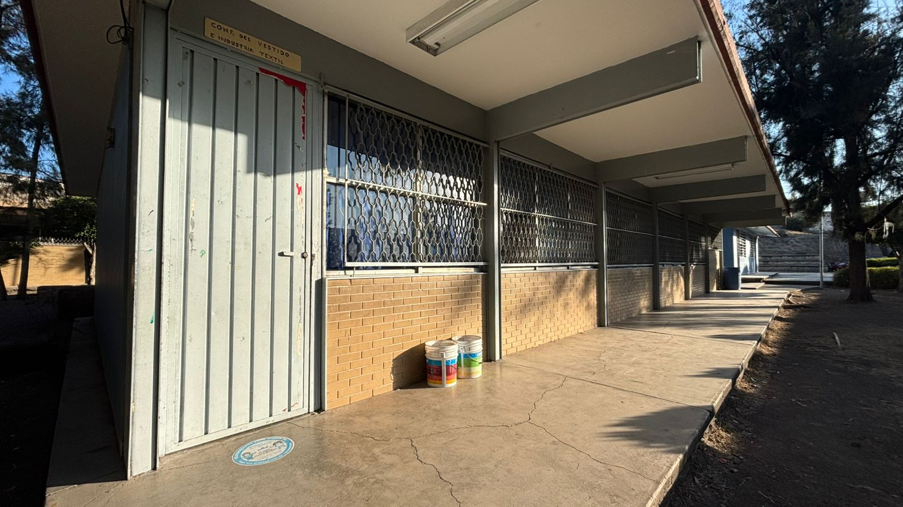
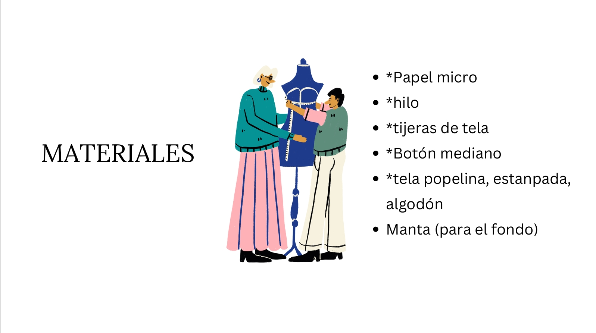
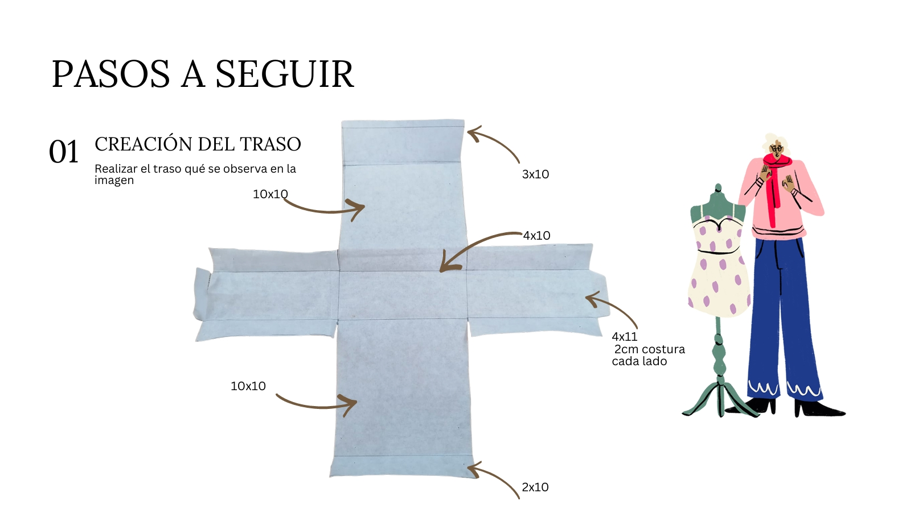
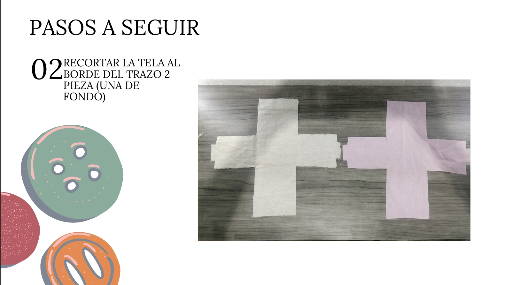
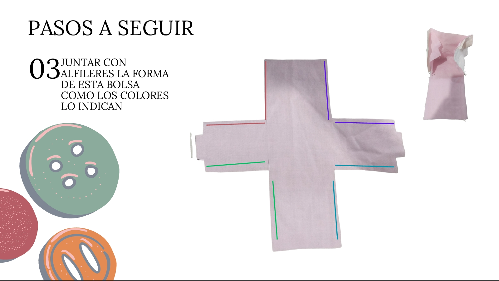
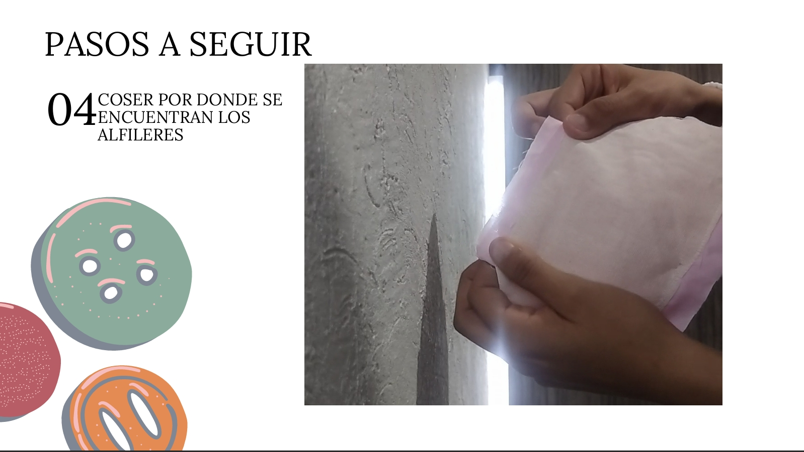
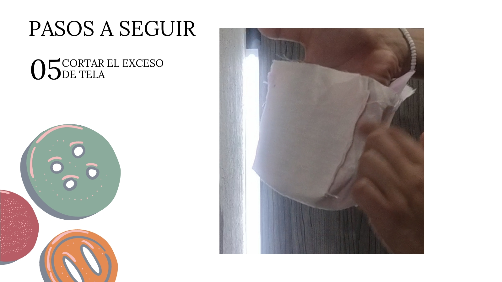
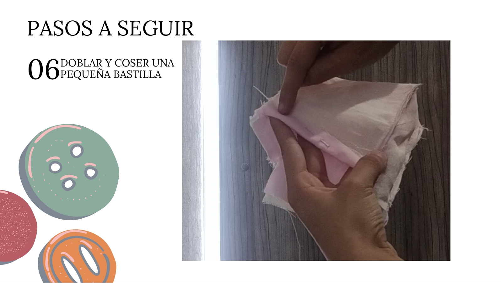
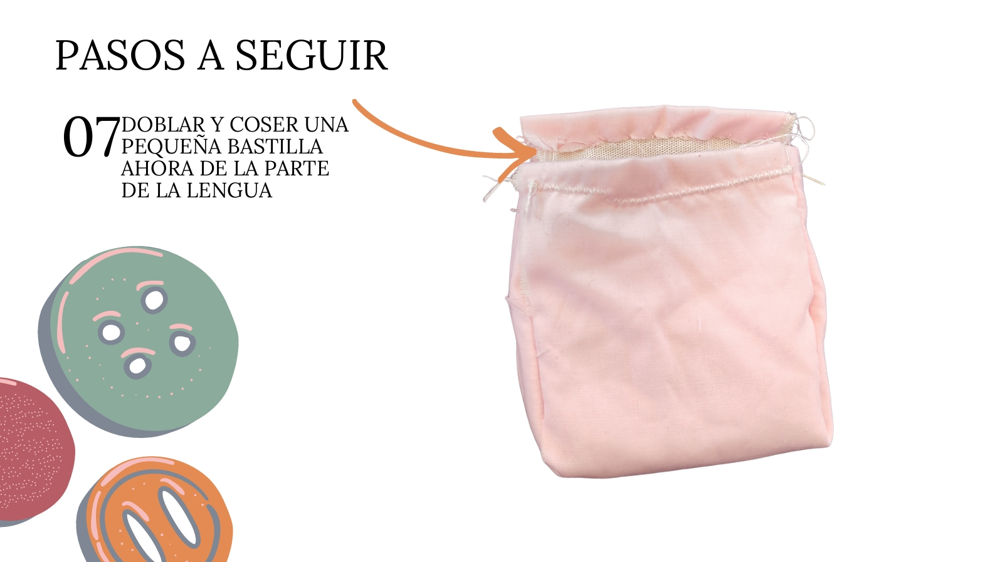
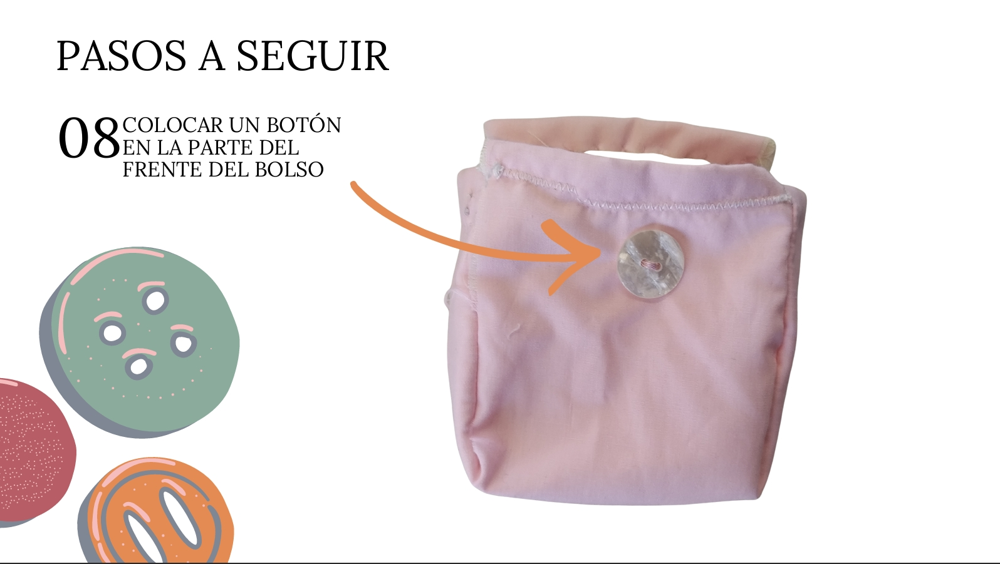
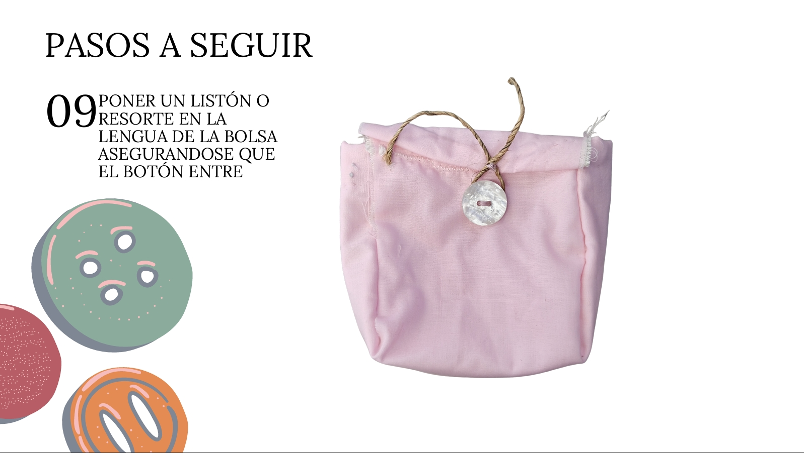
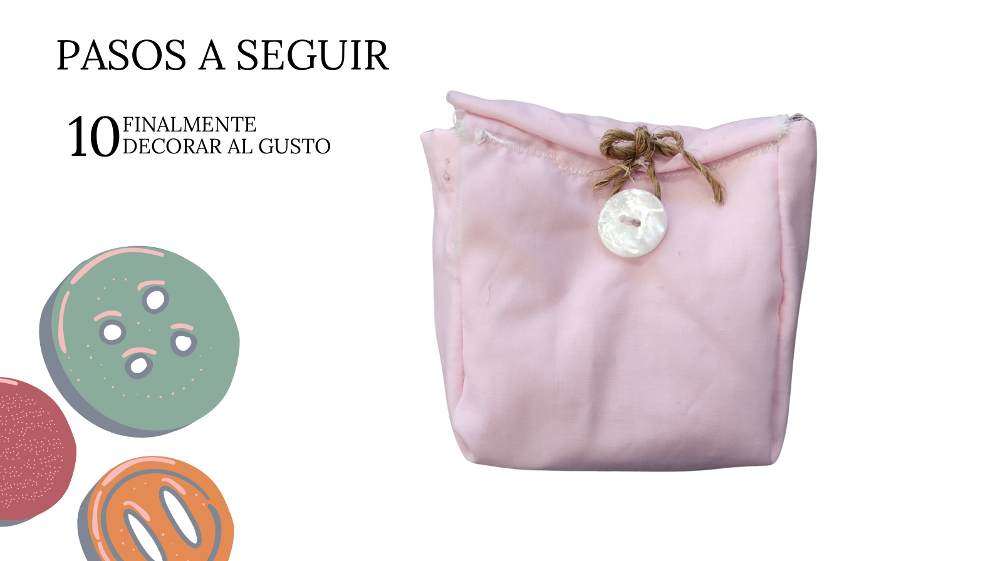